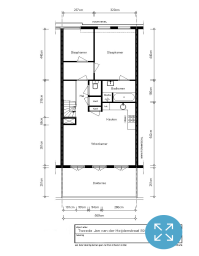

Luxurious spacious and very light apartment (70m2) on the fourth floor with a very large balcony (15m2) in the popular ‘De Pijp’ in Amsterdam. The apartment was renovated in 2008 and the building has an amazing architecture which provides a huge amount of space and light. It is situated in a quiet street between the Van Woustraat and the Amstel River. The Sarphatipark is at the end of the street.

Floorplan
Shared entry at ground level with a shared staircase upto the third floor where the private entrance into the apartment is. A private staircase will take you from the reception area with clothes rack to the fourth floor. At the top of the stairs is the hallway with direct entry into the living space which comprises of a living room, dining room and open kitchen area as well as the spacious balcony with three separate large glazed double doors. The open modern kitchen has all the facilities required including dishwasher, fridge freezer, combination oven and gas hobs. On the wall in the dining space are two large very exclusive champagne racks. Due to the high ceilings which extend up throughout the living space the apartment has a really spacious and comfortable feel to it. The hallway has a central heating cupboard with washing machine and a separate toilet. At the front of the building is a second hallway with ample wardrobe space for hanging clothes and storage and two bedrooms. A smaller spare room with a double bed and a large main bedroom with a super kingsize bed. The main bedroom has an en-suite bathroom with sink, large bath and separate shower.
Around the corner of the Tweede Jan van der Heijdenstraat is the famous Albert Kuypmarkt and the Utrechtsestraat with a host of local shops. Amsterdam centre is minutes away by bicycle or tram and de pijp has a host of restaurants and cafes.
INTERESTED?
Contact Tom Haye on tom@opses.co.uk